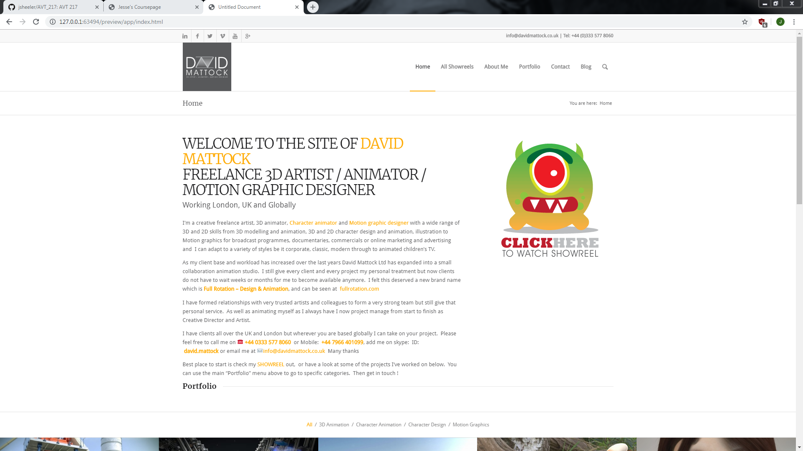
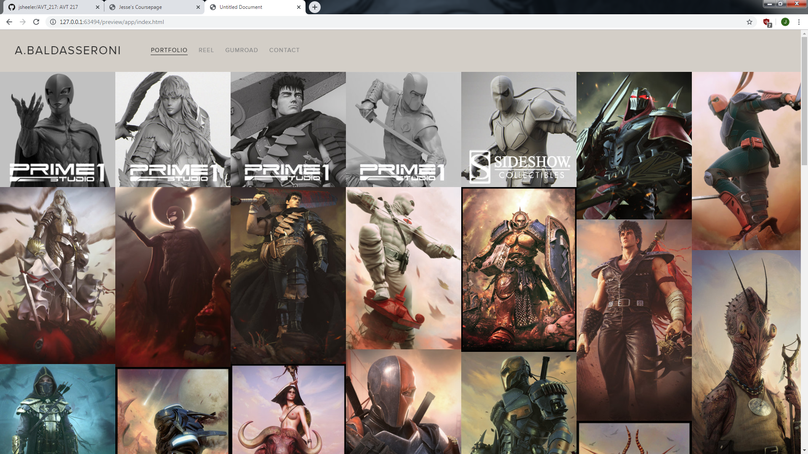
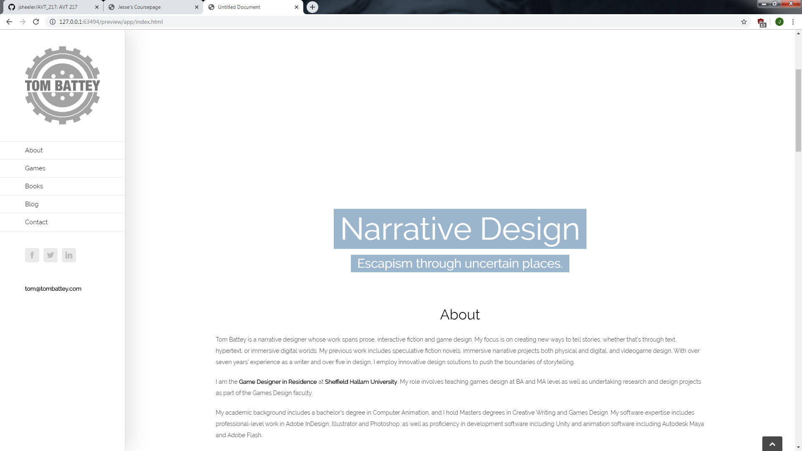

I like this portfolio because it is simple and clean. He clearly states where he is working currently, a few notable places he has worked, and a few games he has worked on. Then we get right into the content of his portfolio with embedded youtube videos down the rest of the page. There also are not a lot of menu navigation items so the website feels simple and clean.
http://www.davidmattock.co.uk/ I like this portfolio because it is a lot different from the first website. It has a decently sized intro talking about his journey through the industry and where he is now. If you proceed to scroll down then you are met with his showreel where you can click on any of his shown projects to be taken to a page that talks about why he made it, who it made it for, and some context behind the work. A little criticism I have though is to make the text bigger. The text seems to small and can be jarring looking at these big pictures and then having to find this tiny text around the page.
https://www.jobyek.com/index.htmlI like this portfolio because it is amateur looking but gets everything right. The background is one solid color which gives the appearance of being amateur but the rest of the website is laid out very nicely. On the first page he goes right into his portfolio pieces and if you click on one, you are taken to a page giving lots of detail about why he did it, who he did it for, the date, and the context. Overall, I really like this website.
https://alessandrobaldasseroni.com/ This is my favorite site so far. The site is based around his portfolio pieces and they arranged out in a very nice manor. If you click on one of his pieces, it takes you to a page that tells you a bit about why he made the piece and in what context. This website also has a lot of pieces in general and is something I aspire to do.
http://tombattey.com/ I like this portfolio because it is the most indepth one. This website is about narrative design and is interesting to see how he laid out his website. This is the only website with its navigation on the side instead of on the top. The website is also laid out such that you can scroll through all components of his website instead of loading a different page which is interesting. If you click on one of his links, then you are taken to a page with an in depth look at the project he is talking about.